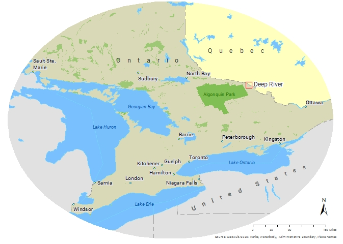

Trail Mapping Solution For Town of Deep River
Background
The Town of Deep River has a small population of approximately 5000. They have many trails, but no resources to navigate them.
The town coordinated with Fleming College to map and make information of the trails more accessible and informative through cost-effective, user-friendly, and mobile accessible web application strategies. Since there had not been any extensive GIS work done for these trails minimal data was available from the 'County of Renfrew' to start the project. Additionally, the town does not have any GIS technology server capability. Considering all of these factors, the project aimed to build an application with a low-cost to no-cost strategy to map Deep River trails. The web application uses Leaflet JS plugins, an open-source JavaScript library. To further assist the visitors of these trails, a series of cartographic maps were produced and printed in the web application.

Objectives
Low-Cost
Low-cost web mapping solution that requires little to no maintenance.
Mobile Friendly
Easy to use on mobile devices.

User Friendly
Simple interface that gives quick access to useful trails information.
Methodology
Agile Methodology
Results
View our Final Products below:
Four Seasons Biking Trail
This is a trail containing five loops and one link, which are the B, H, S, D and M loop respectively, and are used for mountain biking and walking in the summer. This trail is of a moderate difficulty level rated moderate difficult, which can be seen in the upper left of the map. This trail’s starting point is just right of Banting DR road and starts easily but progressively becomes more difficult. Some of the trails may not be suitable for biking due to presence of bush.
Chalk River/Deep River Biking Trail
This is a 30 km trail primarily used for biking in the summer but can also be used as a walking trail. Part of this trail is used for snowmobiling in the winter. This is a relatively easy trail rated moderate difficult, and takes around two hours to complete for intermediate and advanced travelers as seen on the left side portion of the map. This trail has two starting points at Banting Drive and Plant Road. Its difficulty level varies across the trail, which can be seen easily by the symbols placed.
Silver Spoon Trails
These trails consist of nine loops, which are the C, K, B, H, S, X, P, D and M loop. These trails are only used in the winter, and the Four Seasons Biking Trail loops are then used as skiing and snowmobiling trails. These trails have a total length of 30 km, with 20 km being groomed and 10 km being natural, as seen in the upper right. The trails located closer to the river bank are easier than the loop located on the right of Balmer Bay, which is more challenging.
Mount Martin Trail
The hillshade generated was used in this map and this trail is a 5 km trail that begins opposite the Deep River Marina and crosses the Ottawa River into the mountainous 400 M high mountain, Mount Martin. It is difficult to follow and is rated most difficult on our map.
Web Application
The application allows users to zoom in and out, select layers to see all the loops' name, provide the static maps in PDF version to print, and provide an elevation profile for each trail. It works well on mobile devices and will significantly benefit locals and tourists of the Town of Deep River.
Our Team
Ramon Boyce
Hardworking, Motivated, Resourceful and Ambitious, these are just a few words that are used to describe Ramon. From young, he has always had his goal set to working in the GIS Industry. Originally from Barbados, he majored in Geography and Information Technology. At only the age of 17, after achieving his Associates’’ Degree, Ramon has attended both Fanshawe and Fleming College for GIS. He is very eager to continue mastering his craft and the Cartographic Specialist Post-Graduate certificate, is only his first step. With two years experience in GIS, he is incredibly comfortable using various software to make cartographic products and is also very skilled with managing databases.

Sharad Mainaly
Sharad has a decade long professional experience in Medical Industry. After his Master degree in Business Administration and Finance from Newman University, he spent his career working for eye physicians to help people restore their vision. He has learned eye-brain system functions and how brain perceives objects through his Diploma in Ophthalmology program and from his job experiences. He wants to utilize his experiences helping people to visualize complex data in a simpler form. With GIS cartographic skills learned from Fleming college, designing aesthetically appealing map has been his new passion.
Kamel Chehboun
Kamel has an extensive experience in Subsurface Data Management and Software Support where he had direct exposure to mapping technologies, software and GIS concepts. He aims to incorporate the strong knowledge and skills gained in this GIS programme in his future projects. His hobbies include playing soccer, swimming and scuba diving. He graduated from the University of Robert Gordon University in Aberdeen with a Master of Business Administration and a Master of Science in Geophysics with the University of Science and Technology Houari Boumediene in Algiers.
Copyright © APST 62 - GIS Collabrative Project | This template is made with by Colorlib